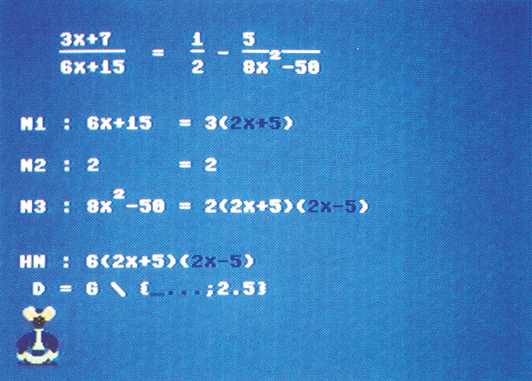
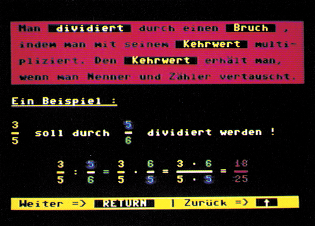
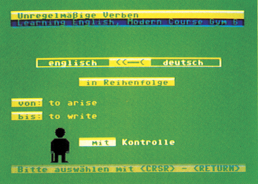

Lernsoftware im Test
Was tut sich Neues auf dem Markt der Lernsoftware? Wir haben für Sie interessante Programme herausgesucht und einem gründlichen Test unterzogen.
Natürlich verfolgen wir für Sie auch zu diesem Thema die neuen Entwicklungen auf dem Markt. Bei unserer bundesweiten Marktanalyse der wichtigsten Lernprogramme entdeckten wir erstaunliche Veränderungen, die allerdings bei der Marktübersicht in dieser Ausgabe schon berücksichtigt sind. Ganze Programmreihen wurden in der letzten Zeit vorwiegend von großen Schulverlagen gestrichen. Andererseits fanden sich kleine Software-Hersteller, die hervorragende Programme anzubieten haben. Unter den neuen Programmen sind uns fünf besonders positiv aufgefallen: zwei Programme zum »Mathe-Pauken«, zwei Englisch-Lernprogramme und ein völligneues Trainingsprogramm, das etwas umfangreicher ist. Wir haben die Programme ausführlich für Sie getestet. Zunächst aber eine Kurzübersicht.
Fünf interessante Neuheiten
Zittern Sie auch, wenn die Mathe-Arbeit zurückgegeben wird? »ALI« kann Ihnen da helfen. Das Programm (Bild 1) gibt es schon seit zwei Jahren, allerdings wird es laufend weiterentwickelt. Nähere Informationen zu der neuesten Version des »intelligenten Algebraprogramms« finden Sie in der Tabelle 1.
Was kann ALI im einzelnen?
- Zunächst ist es ein umfangreiches Algebra-Programm, das in den Klassen 5 bis 13 zu verwenden ist.
- Die Einsatzmöglichkeiten reichen von verschachtelten Klammerberechnungen über quadratische Gleichungen bis hin zur Nullstellenbestimmung höheren Grades.
- Besonders interessant erscheinen die Wertetabellen und die Möglichkeit, zugehörige Funktionen in hochauflösender Grafik darzustellen.
- Auf dem Bildschirm ist die in der Mathematik übliche Schreibweise zu sehen (Potenzen mit Exponenten, Brüche mit echten Bruchstrichen, geschweifte Mengenklammern).
- Für die jeweilige Klassenstufe können Einführungsbeispiele vorgerechnet werden. Das Programm führt alle Aufgaben wie ein Lehrer an der Tafel Schritt für Schritt vor.
- Bei Aufgaben, die vorgerechnet werden, können Sie auch eigene Lösungsvorschläge einbringen. Sind diese richtig, so werden sie mit aufgenommen. Dabei werden gewöhnliche sowie dezimale Brüche akzeptiert.
- Durch die Verwendung einer anderen Farbe wird jeweils deutlich, welcher Teilschritt gerade errechnet wird.
- Noch ein Pluspunkt verdient Beachtung: Gibt man eigene Aufgaben ein, so erkennt das Programm selbständig die Art der Rechenaufgabe. Man muß nicht vorher ins Hauptmenü zurückspringen.
- Das Programm eignet sich vorwiegend für Realschule und Gymnasium, aber auch für Berufsschulen.
- Ein hübscher Gag zum Schluß: Auf einem fliegenden Teppich sitzend, lockert die Märchenfigur ALI die Welt der Zahlen auf und bei richtiger Lösung verneigt er sich vor Ihnen.
Eine Lernstatistik gibt's natürlich auch noch.
Gesamturteil:
- Derzeit ist es das beste Programm für diesen Bereich! Der Schwerpunkt von »ALI« liegt auf der Algebra und damit bei der Mathematik für Klasse 7 bis 11. Bei der Bruchrechnung machen sich allerdings die speicherplatzmäßigen Grenzen des Programms bemerkbar. Die Behandlung der gewöhnlichen Brüche könnte etwas komfortabler sein.
- Um eine illegale Verbreitung des Programms zu verhindern, ist ein Kopierschutz eingebaut. Das Programm arbeitet dadurch mit kaum einem Floppy-Speeder zusammen. Auch ergeben sich gewisse Verzögerungen bei Diskettenzugriffen im Programm.
Liefermöglichkeiten und Preise:
- nur für Commodore 64, mit Handbuch: Diskette 99 Mark (Im Herbst 1986 wird eine weitere Version mit neuer Schnelladeroutine und Druckeransteuerung erscheinen. Schon jetzt war zu erfahren, daß eine Update-Version zum Preis von 39 Mark erhältlich sein wird.
- Heureka-Teachware, Wastl-Witt-Straße 46, 8000 München 21

Das zweite Programm (Bild 2) ist etwas für die Jüngeren: Bruchrechnen für Anfänger. Analog zu dem mehrteiligen Erfolgsprogramm aus gleichem Hause »Die Rechtschreibtafel« nennt sich dieses Programm »Die Rechentafell — Bruchrechnen«. Mehr dazu in Tabelle 2.
Was bietet die »Rechentafel«?
- Sie enthält alle notwendigen Operationen der Bruchrechnung: Addition, Substraktion, Multiplikation, Division, Erweitern und Kürzen.
- Daneben werden auch Kettenaufgaben, echte, unechte und gemischte Brüche behandelt. Auch negative Zahlen lassen sich dabei verarbeiten.
- Es lassen sich ausführliche Beispiele anwählen. Anschließend stellt der Computer Übungsaufgaben.
- Verschiedene Schwierigkeitsgrade sowohl im Menüpunkt »Computeraufgaben«, als auch bei »Eigene Aufgaben« ermöglichen einerseits das Neulernen, andererseits ist das Wiederholen der Aufgabe und Rechnen auf höherem Niveau möglich.
- Gezielte Hilfestellungen sind jederzeit auch während des Rechnens abrufbar. Dabei wird die laufende Aufgabe nicht gelöscht.
- Durch die Verwendung anderer Farben werden bei der Rechnung einzelne Teilschritte deutlich hervorgehoben.
- Ein bestimmter Lösungsweg ist nicht vorgeschrieben. Eigene Lösungsvorschläge oder ganz andere Rechenwege können eingegeben werden.
Gesamturteil:
- Das Programm ist durch gute Menüsteuerung weitgehend selbsterklärend. Ein Rücksprung zum Hauptmenü ist jederzeit möglich.
- Die Beispielaufgaben sind erstklassig gemacht.
- Bei der Eingabe ist die Verwendung der Taste <=> als Eingabeende etwas unüblich. Vielleicht wäre <RETURN> zweckmäßiger? Auch die Taste <B> zur Anforderung des Bruchstriches ist ungewöhnlich. Es gibt Programme, die den Vorgang selbsttätig regeln.
- Das Preis-Leistungs-Verhältnis ist vernünftig. Das Programm ist kopiergeschützt.
Liefermöglichkeiten und Preise
- nur für Commodore 64: Diskette 79 Mark
- Hoppius Unterrichtsmedien, Bannstraße 27, 6330 Wetzlar.

Der »Verbentrainer Englisch I« weist einige Besonderheiten auf. Wir untersuchten es auch auf seine Verwendbarkeit für die häuslichen Schulaufgaben. In der Tabelle 3 finden Sie alle entscheidenden Merkmale.
Was bietet der »Verbentrainer«?
- Das Programm ist zunächst ein Lehrbuch-unabhängiges Vokabeltraining, dessen Wortschatz anhand der wichtigsten Schulbücher der Klassenstufen 1 bis 6 ausgewählt wurde.
- Nützlich ist die Auswahlmöglichkeit einzelner Schwierigkeitsstufen: So können Sie den Stoff für die Lernjahre 1 bis 2, die Stufen 3 bis 6 sowie sonstige Verben auswählen. Vorteil für Schüler: man braucht sich nicht mit Vokabeln zu befassen, die noch gar nicht »dran« waren.
- Ausgezeichnet ist die Möglichkeit des Ausdruckens von Vokabellisten mit Epson FX-80 oder kompatiblen Druckern. Eine beachtliche Leistung!
- Ein Auflisten der Verben am Bildschirm ist zwar im 80-Zeichen-Modus auch möglich, aber nicht besonders lesefreundlich. Das liegt aber nicht am Programm selbst.
- Die unregelmäßigen Verben werden in folgenden Zeitformen konjugiert: Simple Present, Simple Past, Present Perfect. Dazu wird die jeweilige deutsche Übersetzung angeboten.
- Die Abfragemöglichkeiten können unter den eben genannten Formen kombiniert werden. So können Sie sich auf recht unterschiedlichem Leistungsniveau selbst testen.
Gesamturteil:
- Die Arbeitsweise ist durch gute Menüsteuerung größtenteils selbstklärend. Ein Ausstieg zum Hauptmenü ist jederzeit möglich.
- Schriftbild und didaktische Gestaltung der fünf Windows auf dem Bildschirm sind sehr gut.
- Eine kleine Erweiterung für die nächste Version wäre wünschenswert: sehr viele Lehrer verlangen bei der Abfrage des Infinitivs das Voranstellen des Wörtchens »to«. Hier fehlt es noch und wird als Fehler behandelt, wenn man es eingibt.
- Der Wortschatz stimmt in bezug auf die angegebenen Schulstufen, und das Preis-Leistungs-Verhältnis ist gut.
Liefermöglichkeiten:
- für alle Schneider CPC-Computer: Kassette 39 Mark, Diskette 49 Mark
- für Schneider Joyce: Diskette 49 Mark
- für Commodore 128: Diskette 49 Mark
- in Kombination mit einem weiteren Vokabeltrainer für die oben genannten Computer: Kassette 68 Mark, Diskette 78 Mark
- Weeske, Potsdamer Ring 10, 7150 Backnang, Tel. 07191/1528
Das Vokabellernprogramm »Learning English Modern Course Gym 6« (Bild 3) ist so neu, daß es noch keine Unterlagen darüber gibt. Neugierig waren wir deshalb, weil sich der Programmierer Peter Ostermann mit seinem inzwischen berühmten Mathematik-Programm »ALl« bereits einen beachtlichen Platz in der Software-Szene erobert hat. Alles Wesentliche zu »Learning English« finden Sie in der Tabelle 4.
Was bietet »Learning English«?
- Vor allem ist es ein lehrbuchbezogenes Vokabeltraining für das weit verbreitete Schulbuch »Learning English-Modern Course« für das Gymnasium, Stufe 6.
- Geschickt kombinierbar sind die zahlreichen Abfragemöglichkeiten, wodurch jede Langeweile vermieden wird. Man kann entweder vom deutschen oder vom englischen Wort ausgehen oder auch von der Definition. Letzteres ist besonders wichtig für einsprachiges Lernen!
- Sowohl in der Reihenfolge der Buch-Lektionen als auch kreuz und quer ist ein gezieltes Vorgehen möglich. Dabei können die Vokabeln nicht nur isoliert, sondern auch im Kontext geübt werden. Gerade das erscheint uns besonders hilfreich, weil man den Stoff, den man im Zusammenhang lernt, viel besser behält.
- Unregelmäßige Verben lassen sich systematisch trainieren.
- Neu ist auch die Lexikafunktion: angenommen, Sie entdecken in einem Abschnitt Ihres Schulbuches eine unbekannte Vokabel, so wird diese über die <F8>-Taste mit ihren Stammformen auf den Bildschirm gebracht und erklärt. Zusätzlich wird die Lektion angegeben, in der die Vokabel erstmals auftaucht.
- Was wir bis jetzt in keinem anderen Vokabellernprogramm fanden: das Programm erkennt einzelne Rechtschreibfehler und ermöglicht deren Korrektur, sogar bei falschen Präpositionen.
Gesamturteil:
- Komfortable Arbeitsweise durch gute Menüsteuerung und weitestgehend selbsterklärend. Ein Rücksprung zum Programmanfang ist jederzeit möglich.
- Eine besondere Hilfs-Funktion erlaubt gezielte Lösungshinweise.
- Tastaturbelegung wahlweise nach DIN (auch <z> und <y> können vertauscht werden) oder mit »ß« und deutschen Umlauten auf den Funktionstasten.
- Das Anleitungsheft ist klar verständlich geschrieben.
- Wortschatz und didaktischer Aufbau sind sehr gut.
- Das Preis-Leistungs-Verhältnis stimmt. Leider wurde auf einen Kopierschutz nicht verzichtet, was bei einem häufig gebrauchten Lernprogramm schon wünschenswert wäre.
Liefermöglichkeiten:
- nur für Commodore 64: Diskette 64 Mark
- Klett-Verlag, Postfach 809, 7000 Stuttgart 1

Einem Schweizer Mittelstufenlehrer arbeitete die Schulbürokratie viel zu langsam. Recht hatte Armin Rosenast, und so wurde aus seiner Klasse das erste schuleigene EDV-Zentrum der Schweiz. Über ein Multiuser-System mit einer Floppy 1541 werden dort sechs C 64 Computer gesteuert. Seine Schüler zeigten sich ebenfalls experimentierfreudig. Herausgekommen ist eine randvolle Diskette mit dem Titel »Lernkartei«. Es verbirgt sich dahinter ein vielseitiges Trainingsprogramm. Die Übersicht dazu finden Sie in Tabelle 5. Soweit die Kurzinformation zu den Programmen. Ausführliches erfahren Sie in den jeweiligen Tabellen. Wir wollen Ihnen aber auch Hilfen geben, um Lernsoftware beim Kauf besser beurteilen zu können.
Was bietet die »Lernkartei«?
- Sie fällt absolut aus dem Rahmen! Sie ist nicht bloß ein Trainingsprogramm für Rechtschreibung und auch nicht nur ein elektronischer Grammatiktrainer. Die Lernkartei enthält auch noch andere Fachbereiche wie Erdkunde, Biologie, etc.
- Außerdem liefert sie ein Eingabeprogramm zur Erstellung eigener Lerndateien.
- Diskettenbefehle, zum Beispiel formatieren, oder Druckeransteuerung sind weitere Leistungsangebote.
- Besonders hervorzuheben ist: Man kann sich aus den Dateien einzelne Fragen zusammensuchen und so einen Prüfungsbogen erstellen. Wem das immer noch nicht reicht, der sollte sich ein Arbeitsblatt ausdrucken lassen und mit dem auf dem Monitor unsichtbaren Codewort »schubi« das passende Lösungsblatt dazu heften.
Gesamtbewertung:
- Die Arbeitsweise ist durch gute Menüsteuerung weitgehend selbsterklärend. Ein Ausstieg zum Hauptmenü ist fast immer möglich.
- Umlaute sind vorhanden, nur das »ß« fehlt noch. Die in Arbeit befindliche Neufassung soll dies beseitigen.
- Das Begleithandbuch ist klar verständlich geschrieben. Die zahlreichen Beispiele erleichtern den Umgang mit diesem Programm.
- Der Wortschatz und die Grammatikübungen sind noch nicht in allen Fällen an den bei uns verbindlichen Standardwortschatz angeglichen, um als typisches Schulprogramm zu gelten. Die schon erwähnte Überarbeitung soll auch diesen Mißstand beheben.
- Angesichts der vielfältigen Möglichkeiten ist das Preis-Leistungs-Verhältnis vernünftig.
Liefermöglichkeiten:
- nur für Commodore 64: Diskette 90 Mark
- eine Schneider-Version sowie Datendisketten zu weiteren Themen sind in Arbeit.
- Huesmann + Benz-Verlag, Hochwaldstr. 18, 7700 Singen
Nicht immer halten die Programme, was in den Prospekten versprochen wird. Was nutzt ein Vokabeltrainer für Französisch, wenn keine französischen Sonderzeichen verarbeitet werden? Oder noch besser: Ein Lernprogramm für Rechtschreibung, das weder ein »ß«, noch die deutschen Umlaute kennt. Alles schon da gewesen!
Aber wie kann man die Spreu vom Weizen trennen? Gerade weil Software vom Umtausch ausgeschlossen wird, ist es um so wichtiger, sich vor dem Kauf über die Qualitäten des Programms ein Bildzu machen. 12 wichtige Kriterien hierzu:
- Wird die in Deutschland übliche Schreibweise mit Groß-Kleinschrift, Umlauten und »ß« beachtet?
- Gibt es an kritischen Stellen des Programms abrufbare Hilfen, und wie sind sie anzuwählen?
- Ist die Führung durch das Programm sehr streng oder bestehen Wahlmöglichkeiten (beispielsweise einstellbare Schwierigkeitsstufen)?
- Arbeitet die Lernsoftware mit einer Menüsteuerung oder muß man ständig in einem Begleitheft nachsehen?
- Werden die zu lernenden Inhalte auch sachlich richtig dargestellt?
- Ist das Programm eigenständig oder muß man weitere Dinge wie Steuermodule oder Bücher dazu kaufen?
- Sind die Bildschirmseiten übersichtlich gegliedert? Werden inhaltliche Informationen von den Aufforderungen an den Benutzer deutlich abgegrenzt?
- Werden Zusammenhänge zwischen Grafiken und Text verdeutlicht? Ist die Grafik lernpsychologisch sinnvoll und sachlich richtig?
- Kann der Anwender die Art der Bearbeitung, beispielsweise den Wissensstand oder den Schwierigkeitsgrad, selbst wählen?
- Wird die Bearbeitung der gestellten Aufgaben unter Zeitvorgaben vorgenommen und kann der Lernende diese Vorgaben beeinflussen?
- Erfährt der Benutzer nach einer bestimmten Anzahl von Lösungsversuchen das richtige Ergebnis?
- Gibt es differenzierte Rückmeldungen und sind abgestufte Hilfen möglich?
Dieser Fragenkatalog sollte auch Lehrern zur Orientierung dienen.
Wenn Sie sich für ein Lernprogramm interessieren, sollten Sie es sich auf alle Fälle vorführen lassen, ehe Sie es kaufen. Mit Hilfe der Fragen können Sie sich sicher schon ein Urteil machen.
(Rüdiger Werner/kn)